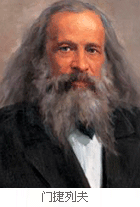

I'm a chemist(I have ability to use analytical instruments)
I come from Wanzhou, Chongqing. It is a beautiful place. But recently, because of the new coronavirus epidemic, we have to stay at home every day. This epidemic is very serious, affecting all aspects of human society, leading to lectures and destroying many of my original scientific research plans. So I hope the epidemic can be ended as soon as possible with the efforts of medical workers. We have lost a lot.
Research field
Dmitri Mendeleyev's failure to win the Nobel Prize should be the most shocking and regrettable thing in the history of Nobel Prize. The Russian scientist, who discovered the periodicity of chemical elements, made the world's first periodic table of elements and predicted some elements that had not been discovered. According to the Nobel archives, the Nobel Prize Committee had intended to award the 1906 chemistry prize to the master, but one of the Committee eventually kicked Mendeleev out of the list. The great chemist died in 1907.
Funny things
On February 2, 1907, Mendeleev, a famous Russian chemist, died at the age of 73. [2] In order to commemorate this great scientist, in 1955, American scientists such as a. gniorso, B.G. Harvey and G.R. choppin bombarded cuvette (253es) with helium nucleus in the accelerator. Cuvette combined with helium nucleus to emit a neutron, and obtained a new element. So it was named Mendeleyev as mendelevium (MD)